Services & our work
Everything C&K Painting Services does, with photos from real jobs around Fredericksburg, Spotsylvania, Stafford, Caroline and beyond.
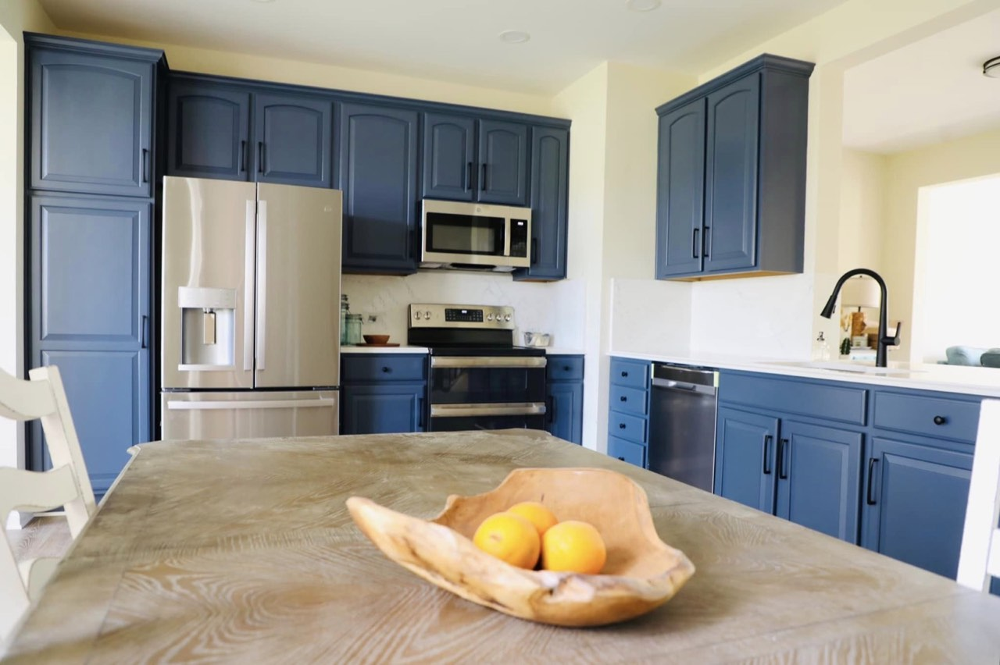
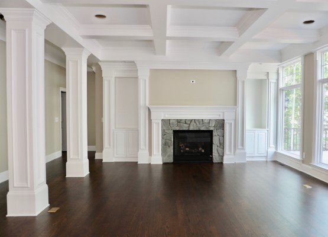
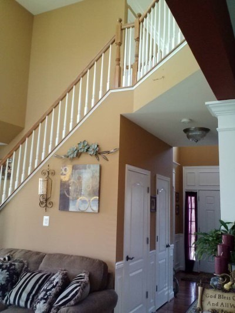
Rooms that feel brand new.
Walls, ceilings, trim and tall foyers, brushed, rolled or sprayed. Unsure what direction to take your home? Our interior designer can guide you when choosing your color palette.
- Interior painting, brush, roll or spray
- Ceilings, trim and two-story foyers
- Color guidance from our interior designer
- Benjamin Moore Paints & Products
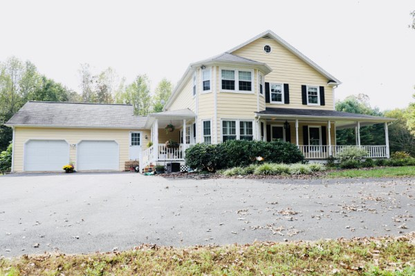
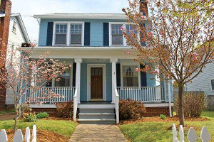
Curb appeal, inside the lines.
Homes, porches, barns and commercial buildings from Northern Virginia to the northern Richmond suburbs, with the prep work that keeps paint looking good.
- Exterior painting of homes and buildings
- Power washing
- Sealing decks
- Metal roof painting
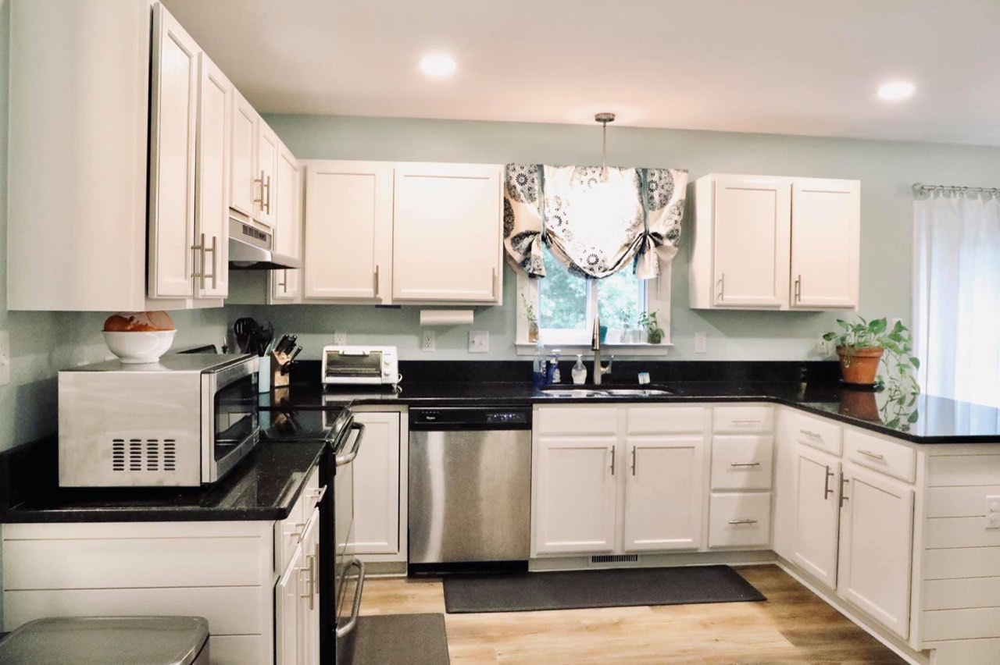
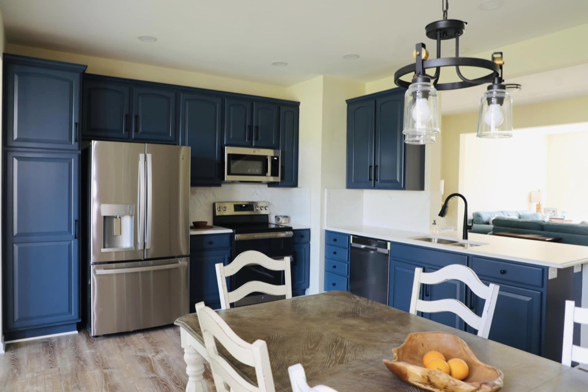
A new kitchen, without the new kitchen.
Dated wood cabinets painted in a fresh color: navy, sage, cream or crisp white. A big change for the heart of the house.
- Kitchen cabinet refinishing
- Painted cabinets in the color you choose
- Matching trim and walls
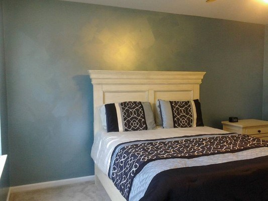
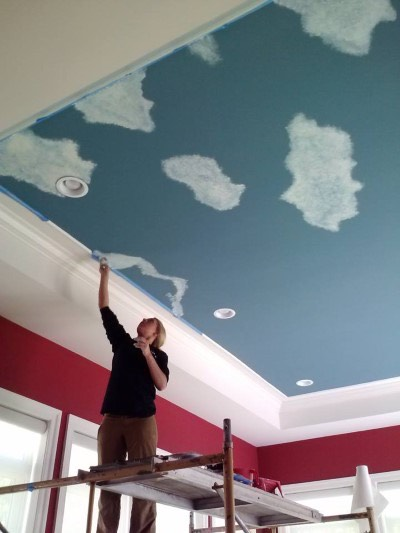
Walls with a little personality.
Faux finishes, metallic glazes, stains, painted stripes and murals, for homes and for businesses like vet clinics and vision centers.
- Faux finishes
- Stain & special finishes
- Metallic glazes and painted stripes
- Murals
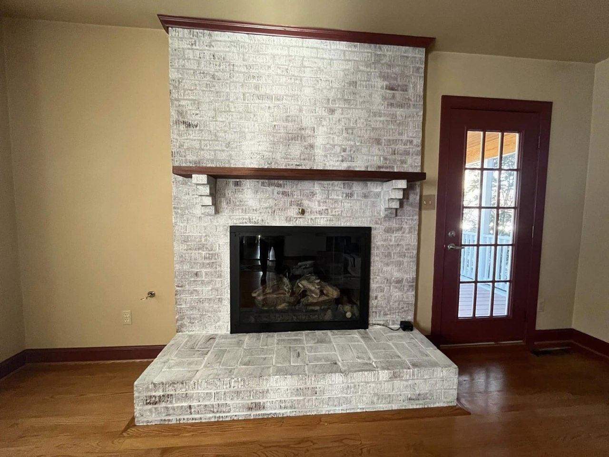
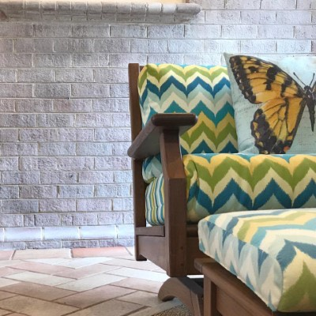
Old brick, softened.
Red brick fireplaces and accent walls lightened with a whitewash, so the texture stays and the room gets brighter.
- Whitewashed brick fireplaces
- Whitewashed brick accent walls
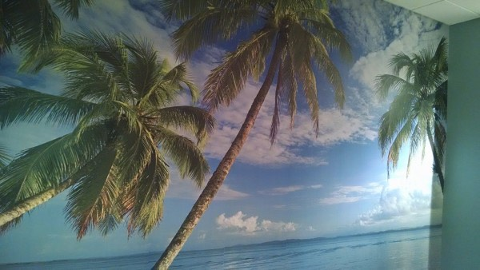
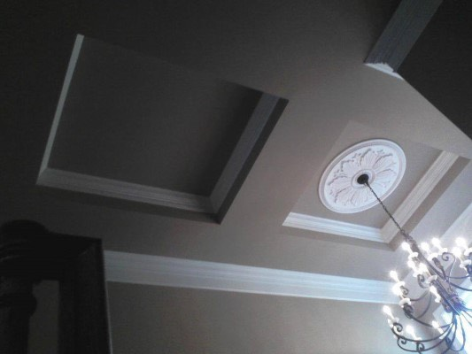
Smooth walls before the first coat.
The unglamorous part that makes a paint job last: plaster and drywall work, wall repair, smoke and water damage, wallpaper installation and removal.
- Plaster work
- Drywall work and wall repair
- Smoke / water damage
- Wallpaper installation & removal
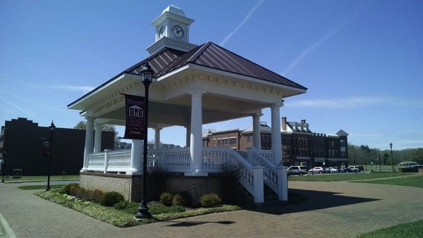
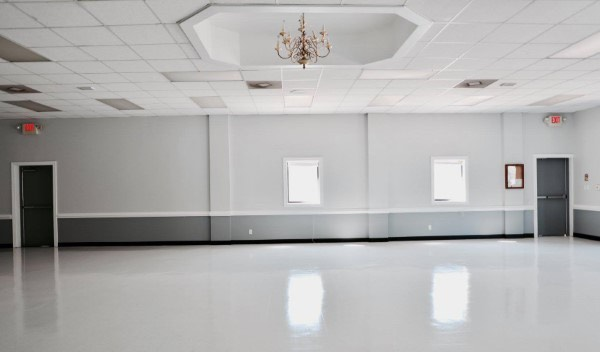
Churches, offices and landmarks.
Residential and commercial services, including historic renovations. Our clients include churches, medical offices, a bank, a fire department and Stafford County Government Offices.
- Commercial interiors and exteriors
- Historic renovations
- Churches and community buildings
Recent transformations
Tap any photo to see it larger.
Ready for a fresh coat?
Contact us for a free estimate. Call Kim and Charlie or send the request form.